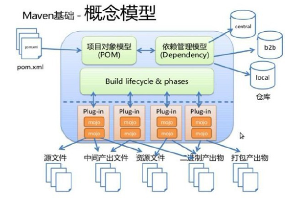
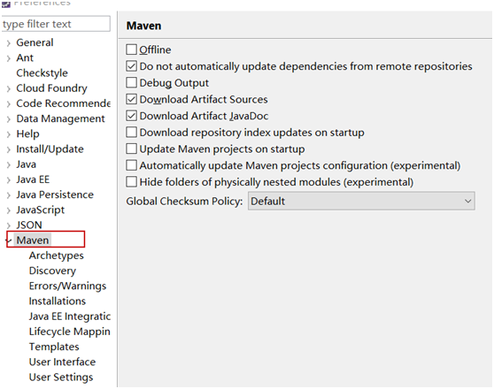
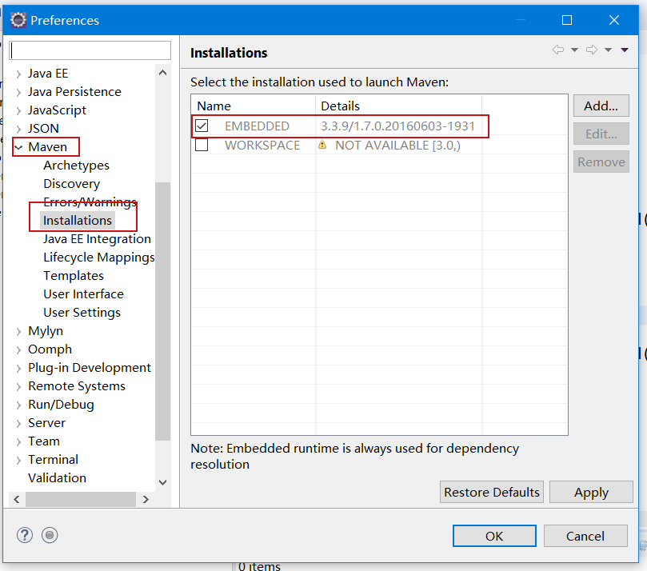
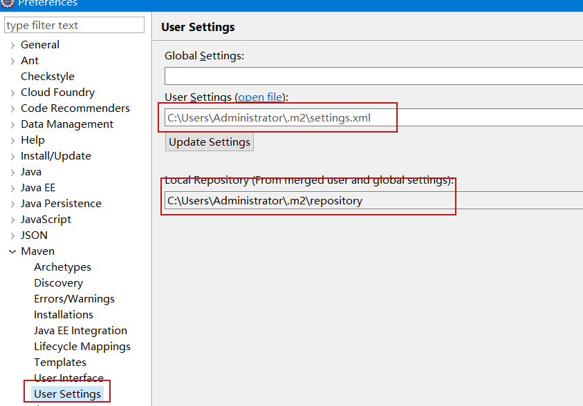

1. Maven 的基本使用
1.1. 基本概念
Maven 是基于项目对象模型（POM），可以通过一小段描述信息来管理项目的构建，报告和文档的软件项目管理工具。
Maven 主要有两个功能：
- 项目构建
- 依赖管理

1.1.1. 安装 Maven
- 下载解压 maven 压缩包（http://maven.apache.org/）
- 配置环境变量
前提，需要安装 java 。
在命令行执行如下命令：
mvn --version
如出现类似如下结果，则证明 maven 安装正确/成功。
Apache Maven 3.5.0 (ff8f5e7444045639af65f6095c62210b5713f426; 2017-04-04T03:39:06+08:00)
Maven home: D:\Program Files\apache-maven-3.5.0\bin\..
Java version: 1.8.0_144, vendor: Oracle Corporation
Java home: C:\Program Files\Java\jdk1.8.0_144\jre
Default locale: zh_CN, platform encoding: GBK
OS name: "windows 10", version: "10.0", arch: "amd64", family: "windows"
1.1.2. 创建项目
在你所期望建立项目的文件路径下，执行如下命令
mvn archetype:generate \
-DgroupId=com.mycompany.app \
-DartifactId=my-app \
-DarchetypeArtifactId=maven-archetype-quickstart \
-DinteractiveMode=false
这条命令会在当前目录下，新建一个名字与 artifactId 值相同的 Maven 项目。
其项目目录结构如下：
my-app
│── pom.xml
└── src
├── main
│ └── java
│ └── com
│ └── mycompany
│ └── app
│ └── App.java
└── test
└── java
└── com
└── mycompany
└── app
└── AppTest.java
注意，maven 项目有固定的目录结构，与开发工具无关。无论使用 Eclipse（及其派生工具）还是 Intellij Idea 都是如上的目录结构。
1.1.3. POM 文件
pom 文件是 maven 项目的核心文件，中包含了：
- 项目基本信息（General Project Information）
- 构建环境（Build Environment）
- POM 关系管理（POM Relationships）
- 构建设置（Build Settings）
对于 pom 文件中的各个设置，后续详细讲解。
1.1.4. 构建项目
生成项目的最终 jar 包非常简单，仅需在 Maven 项目下执行：
mvn package
1.1.5. 基本配置
Maven 有两个 settings.xml 配置文件，一个是全局性配置文件，一个是用户个人配置文件。
%MAVEN_HOME%/conf/settings.xml 是 maven 全局的配置文件。该配置文件中配置了本地仓库的路径，默认就是：~/.m2/repository 。其中 ~ 表示当前用户路径 C:\Users\[UserName] 。
~/.m2/settings.xml 是用户的配置文件（默认没有该文件，需要将全局配置文件拷贝过来在进行修改）。
1.2. Maven 命令
在使用终端时，Maven 命令需要在 pom.xml 所在目录中执行以下命令。
mvn compile
执行
mvn compile命令，完成编译操作执行完毕后，会生成
target目录，该目录中存放了编译后的字节码文件（.class文件）。mvn clean
执行
mvn clean命令，完成清理操作。执行完毕后，会将 target 目录删除。
mvn test
执行
mvn test命令，完成单元测试操作执行完毕后，会在 target 目录中生成三个文件夹：surefire、surefire-reports（测试报告）、test-classes（测试的字节码文件）。
mvn package
执行
mvn package命令，完成打包操作执行完毕后，会在 target 目录中生成一个文件，该文件可能是 jar、war 。
mvn clean compile
组合指令，等价于先后执行：
mvn clean和mvn compile。通常应用于上线前执行，清除测试类mvn clean test
组合指令，等价于先后执行：
mvn clean和mvn test，通常应用于测试环节。
1.3. Eclipse 中使用 Maven
在最近的版本中，Eclipse 已经内置了 M2Eclipse 插件，因此能够在 Eclipse中 直接使用 Maven 。
查看 eclipse 中是否有 maven 插件


设置用户配置

通过骨架（archetype）创建 maven 工程
第一步：选择 new → maven → Maven Project
第二步：New Maven Project 窗口不作任何设置，直接 Next 。
第三步：选择 maven 的工程骨架，这里我们选择 quickstart ，点击 Next 。
第四步：输入 GroupId、ArtifactId、Version、Package 信息点击 finish完成。
1.4. Maven 核心概念
1.4.1. 坐标
在 maven 中坐标就是为了定位一个唯一确定的 jar 包。坐标的组成部分有：
- groupId：定义当前Maven组织名称
- artifactId：定义实际项目名称
- version：定义当前项目的当前版本
1.4.2. 依赖管理
依赖管理就是对项目中 jar 包的管理。可以在 pom 文件中定义 jar 包的坐标，管理依赖。
依赖声明主要包含如下元素：
<dependencies>
<dependency>
<groupId>junit</groupId>
<artifactId>junit</artifactId>
<version>4.11</version>
<scope>test</scope>
</dependency>
<dependency>...</dependency>
<dependency>...</dependency>
</dependencies>
1.4.3. 依赖范围
| 依赖范围（Scope） | 对主代码 ClassPath 有效 | 对测试代码 ClassPath 有效 | 被打入 jar/war 包中 | 例子 |
|---|---|---|---|---|
| compile | Yes | Yes | Yes | log4j |
| test | - | Yes | - | junit |
| privided | Yes | Yes | - | servlet-api |
| runtime | - | - | Yes | jdbc 驱动实现类 |
1.4.4. 依赖传递和依赖冲突
略
1.4.5. 生命周期
Maven 生命周期就是为了对所有的构建过程进行抽象和统一。这个过程分为三个独立阶段（也叫生命周期）：
- Clean Lifecycle：在进行真正的构建之前进行一些清理工作。
- Default Lifecycle：构建的核心部分，编译，测试，打包，部署等等。
- Site Lifecycle：生成项目报告，站点，发布站点。
这三个阶段是相互独立的，这意味着，你可以仅仅调用 clean 来清理工作目录，仅仅调用 site 来生成站点。当然你也可以直接运行 mvn clean install site 运行所有这三套生命周期。
三个阶段中，Default Lifecycle 是核心。
这三个阶段，每个阶段中又各自分为不同的小步骤。当执行某一个小步骤时，它之前的小步骤都会被执行。Default Lifecycle 中包含了几十个小步骤，其中重要和常用的步骤（先后顺序）是：
- ...
- compile: 编译项目的源代码。
- ...
- test: 使用合适的单元测试框架运行测试。这些测试代码不会被打包或部署。
- ...
- package: 接受编译好的代码，打包成可发布的格式，如 JAR 。
- ...
- install: 将包安装至本地仓库，以让其它项目依赖。
- ...
1.5. 插件
Maven 本质上是一个插件的框架/平台。
例如：
mvn compile这个命令，就是由maven-compiler-plugin插件提供的。mvn test这个命令，就是由maven-surefire-plugin插件提供的。mvn package这个命令，就是由maven-jar-plugin/maven-war-plugin插件提供的。
Compile 插件
<build>
<plugins>
<plugin>
<groupId>org.apache.maven.plugins</groupId>
<artifactId>maven-compiler-plugin</artifactId>
<configuration>
<source>1.8</source>
<target>1.8</target>
<encoding>UTF-8</encoding>
</configuration>
</plugin>
<plugin>...</plugin>
<plugin>...</plugin>
<plugins>
</build>
Maven 除了内置/自带的插件外，还可以“安装”第三方插件。任何一个 Maven 动作都是交由具体的插件去完成的。
1.5.1. Tomcat 7 插件
<build>
<plugins>
<plugin>
<!-- 配置插件 -->
<groupId>org.apache.tomcat.maven</groupId>
<artifactId>tomcat7-maven-plugin</artifactId>
<version>2.2</version>
<configuration>
<path>/demo</path>
<port>8080</port>
<uriEncoding>UTF-8</uriEncoding>
</configuration>
</plugin>
<plugin>...</plugin>
<plugin>...</plugin>
<plugins>
...
</build>
注意：有 8 版本的 tomcat-maven 插件，但是中央仓库中并没有。所以，如果想要使用 tomcat8-maven-plugin 插件需要自己额外处理。
1.5.2. maven-assembly-plugin 插件
该插件是针对 jar 包打包。war 包使用
mvn package命令时，在 WEB-INF 下的 lib 下会自动加入所依赖的 jar 包。
maven 打包生成普通 jar 时，只会包含工程下源码编译结果，不包含 pom.xml 里依赖的 jar，如需加入项目依赖的 jar 文件，可使用 maven-assembly-plugin 插件，使用方式如下：
在 pom.xml中 添加 maven-assembly-plugin 插件
<plugins> ... <plugin> <artifactId>maven-assembly-plugin</artifactId> <configuration> <descriptorRefs> <descriptorRef>jar-with-dependencies</descriptorRef> </descriptorRefs> </configuration> </plugin> ... </plugins>在 pom.xml 同级目录下打开命令行执行如下命令：
mvn assembly:assembly
执行成功后会在 target 文件夹下多出一个以 -jar-with-dependencies.jar 结尾的 jar 包，这个 jar 包就包含了项目依赖的所有 jar 的 class 文件。
如果不希望依赖的 JAR 包变成 CLASS （而是以 .jar 包的方式存在），可以修改ASSEMBLY 插件.
找到 assembly 在本地的地址，一般是
.m2\repository\org\apache\maven\plugins\maven-assembly-plugin用 WINZIP 或解压工具打开此目录下的 maven-assembly-plugin-xxx.jar, 找到
assemblies\jar-with-dependencies.xml把里面的 UNPACK 改成 FALSE
1.6. Maven 仓库管理
用来统一存储所有Maven共享构建的位置就是 Maven 仓库。
Maven 仓库分为
本地仓库
~/.m2/repository每个用户只有一个本地仓库
远程仓库
中央仓库：Maven 默认的远程仓库
http://repo1.maven.org/maven2私服：是一种特殊的远程仓库，它是架设在局域网内的仓库
以下网站可查询每个项目的坐标
https://mvnrepository.com/
https://maven.aliyun.com/mvn/search
中央服务器设置（修改 settings.xml 配置文件）
<mirrors>
<mirror>
<id>alimaven</id>
<name>aliyun maven</name>
<url>http://maven.aliyun.com/nexus/content/repositories/central/</url>
<mirrorOf>central</mirrorOf>
</mirror>
</mirrors>